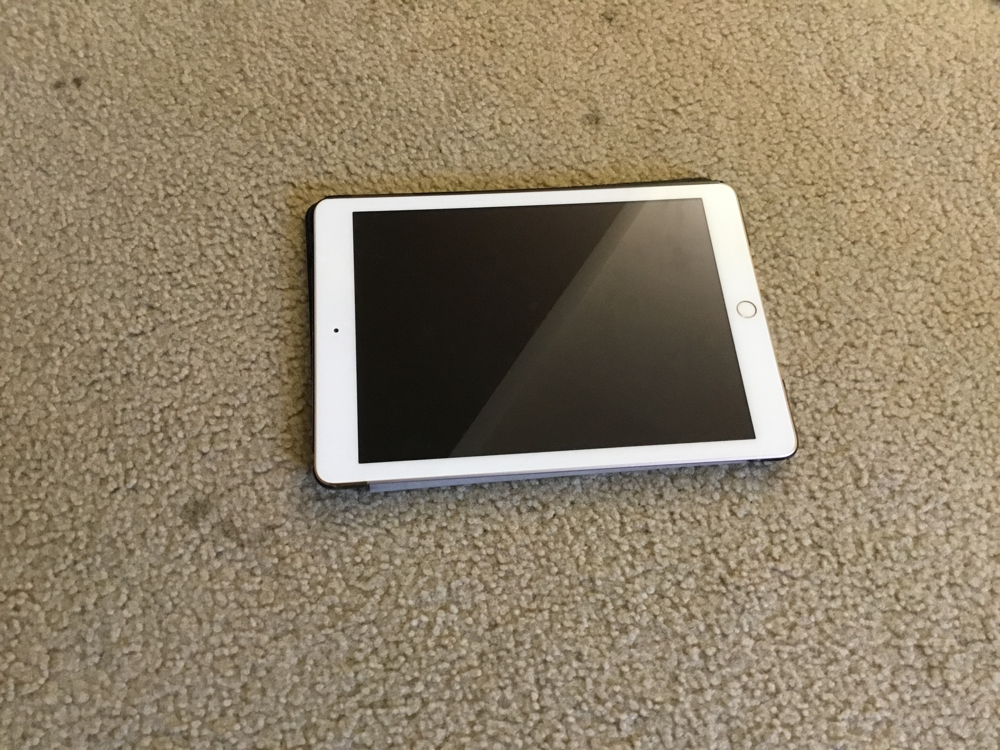
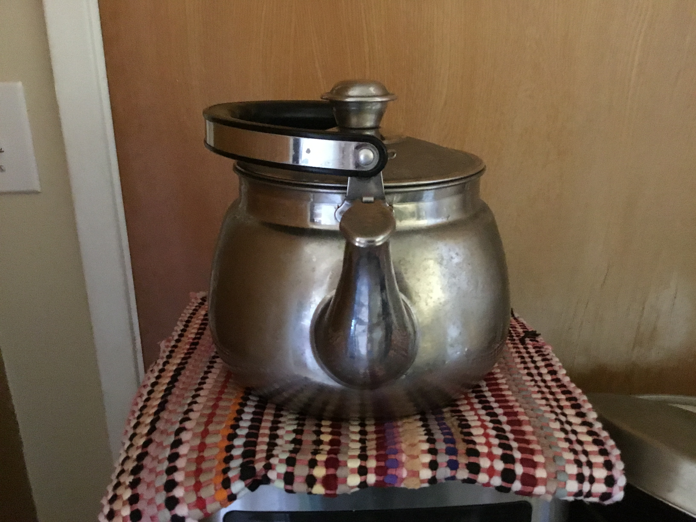
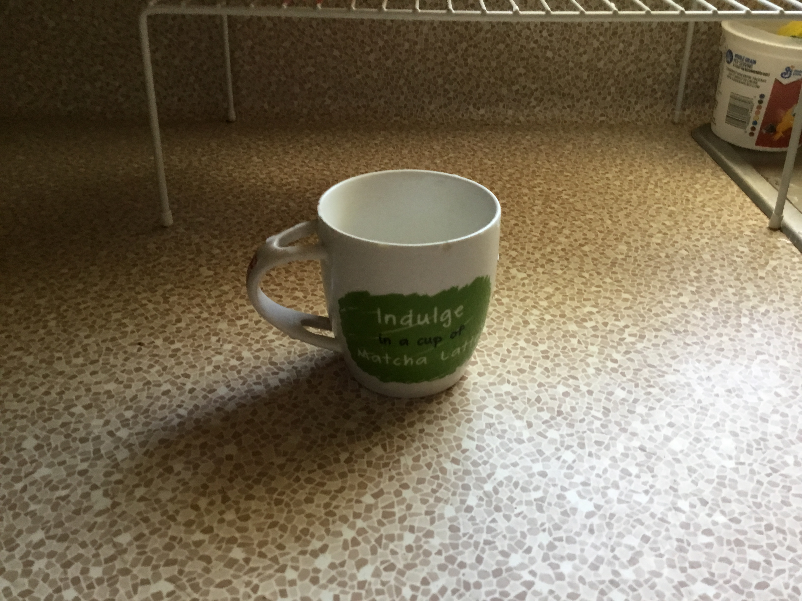
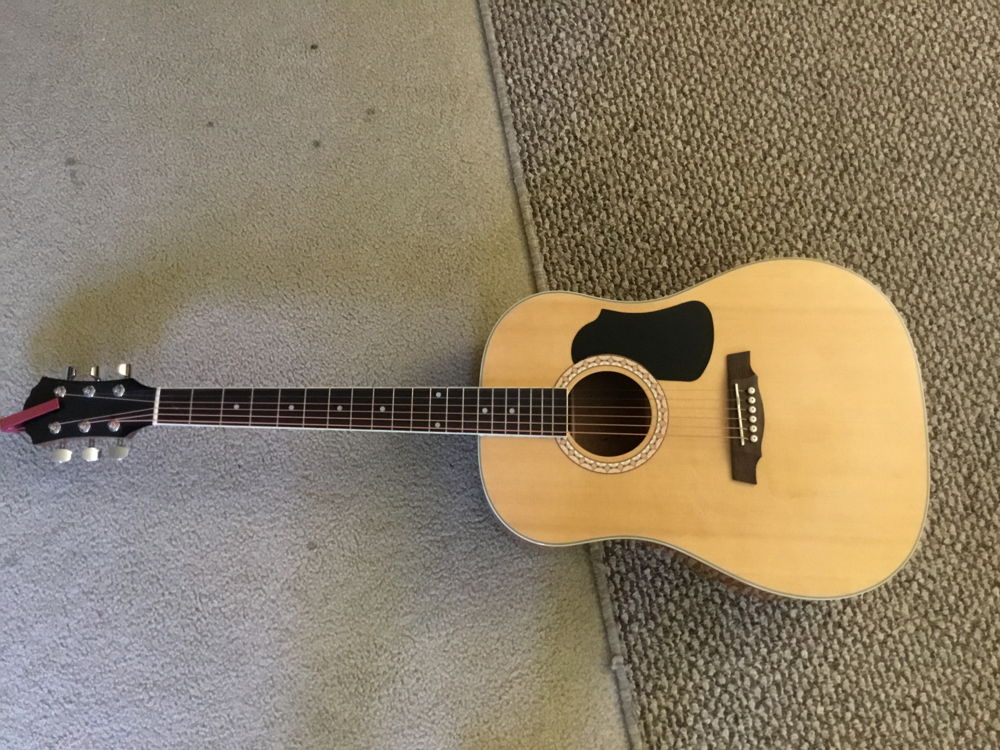
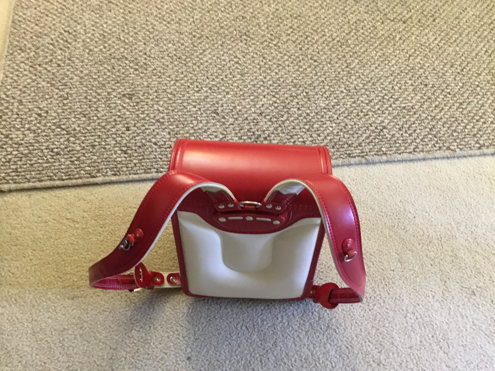

Case Study Between Google Lens and MobileNet
Google Lens
VS.
MobileNet
- Test Image - 
Output on Google Lens - iPad
Output on Mobilenet Model - Laptop
Result -
Google Lens is more accurate
- Test Image - 
Output on Google Lens - Kettle
Output on Mobilenet Model - CoffeePot
Result -
GoogleLens is more accurate
- Test Image - 
Output on Google Lens - Ceramic Small Coffee Mug
Output on Mobilenet Model - CoffeeMug
Result -
GoogleLens is more accurate
- Test Image - 
Output on Google Lens - Amazon Basics Beginner Full-Size Acoustic Guitar
Output on Mobilenet Model - Acoustic Guitar
Result -
GoogleLens is more accurate
- Test Image - 
Output on Google Lens - Randoseru
Output on Mobilenet Model - Smoothing Iron
Result -
GoogleLens is more accurate
I have test 5 images
GoogleLens has predicted all of them more accurately than MobileNet
So according to this data I conclude that GoogleLens is more accurate.
GoogleLens has predicted all of them more accurately than MobileNet
So according to this data I conclude that GoogleLens is more accurate.